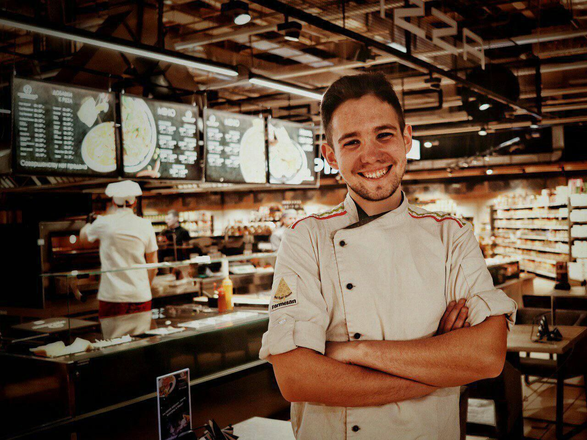
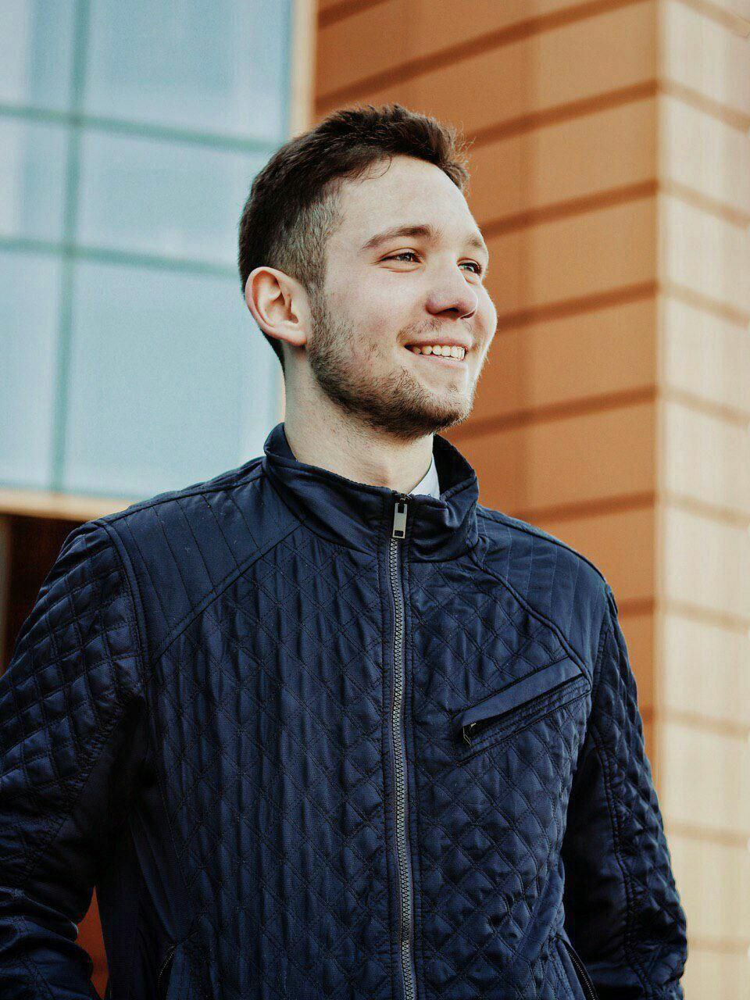

From the Kitchen to the World of Technology: A Journey Shaped by Change and Passion for Ukrainian Cuisine
My name is Vladyslav, and I am 26 years old. My journey has been full of unexpected turns, from working in kitchens across Europe to pursuing a new career in technology, but one thing has remained constant: my love for Ukrainian cuisine. I believe Ukrainian food is the most delicious in the world—rich in history, flavor, and culture—and it has always been a central part of my life.
For 8 years, I worked as a cook, baker, and pastry, mastering the art of cooking. Growing up in Ukraine, I was surrounded by the amazing flavors of traditional Ukrainian dishes like borscht, varenyky (dumplings), holubtsi (stuffed cabbage rolls), and of course, the rich, hearty bread that forms the heart of our meals. Ukrainian food is about more than just taste—it’s about family, tradition, and a deep connection to the land. Every dish tells a story, and I took great pride in sharing this culinary heritage with others.
I had the privilege of working in various European countries, including Slovakia, Lithuania, and Croatia, where I learned about different cuisines and culinary traditions. Yet, no matter where I went, I always believed that Ukrainian food was the best. There’s something special about its simplicity, its bold flavors, and the way it brings people together around the table.
However, life changed dramatically for me when the war in Ukraine forced me to leave my home country. Like so many others, I had no choice but to seek safety elsewhere. I moved to Switzerland, a country where I began rebuilding my life. While adapting to a new environment was a challenge, it also gave me the opportunity to explore new possibilities. I realized that the kitchen, while a place of joy for me, was no longer where I wanted to build my future.
Driven by curiosity and a desire for growth, I decided to pursue a career in programming. I completed a course in software testing and explored web development, diving into CSS, JavaScript, and HTML. The world of technology intrigued me, and I saw it as a new challenge, one that would allow me to create and innovate in ways I hadn’t before. Currently, I am studying computer science through HarvardX’s CS50, expanding my knowledge and skills. My long-term dream is to work in artificial intelligence or cybersecurity, where I can contribute to creating solutions that make a difference.
Though my career has shifted from the kitchen to coding, the skills I developed as a chef—creativity, precision, problem-solving—continue to serve me well. Just like in cooking, where every ingredient counts and every step is important, in programming, every line of code must be crafted with care and attention.
The war took me far from home, but it also allowed me to grow, explore new possibilities, and discover a passion for technology. Yet, no matter where I go or what I do, I will always believe that Ukrainian cuisine is the most delicious in the world. Its flavors, its warmth, and the memories it holds will always be a part of me. And while I may no longer be cooking in kitchens, I carry my love for Ukrainian food with me, knowing that, just like coding, it’s something that can bring people together and make the world a richer, more meaningful place.
